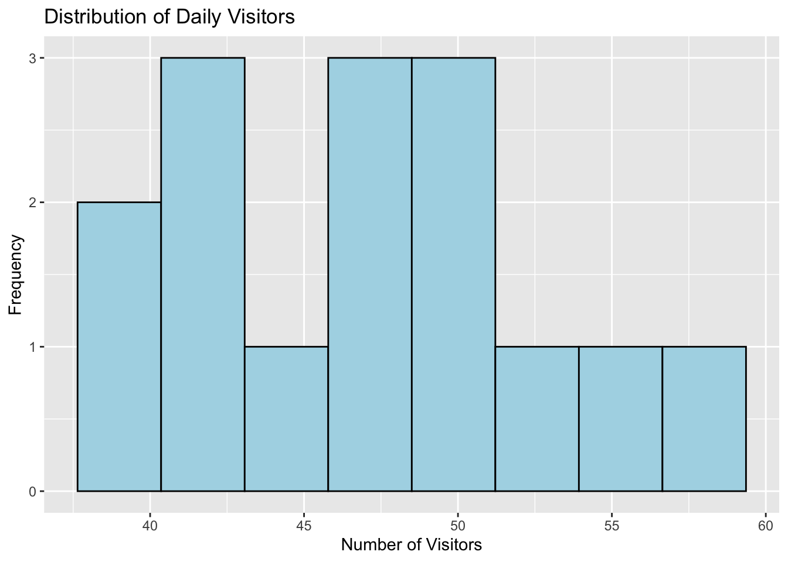
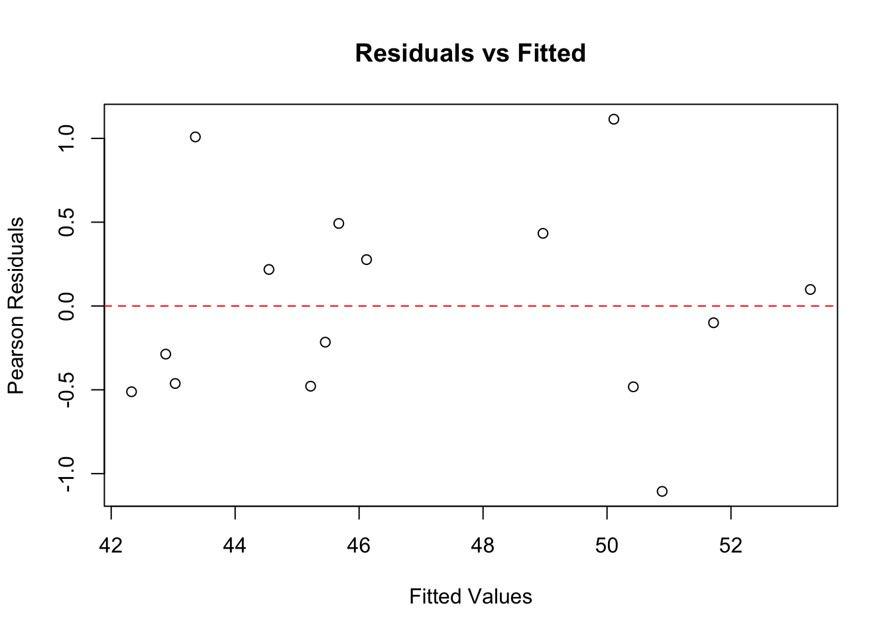

library(ggplot2)
library(dplyr)
Attaching package: 'dplyr'The following objects are masked from 'package:stats':
filter, lagThe following objects are masked from 'package:base':
intersect, setdiff, setequal, unionLibraries
library(ggplot2)
library(dplyr)
Attaching package: 'dplyr'The following objects are masked from 'package:stats':
filter, lagThe following objects are masked from 'package:base':
intersect, setdiff, setequal, union# Example: Website daily visitor counts
data <- data.frame(
visitors = c(42, 48, 39, 52, 44, 58, 51, 47, 41, 49, 40, 46, 43, 54, 50),
day_of_week = factor(c("Mon", "Tue", "Wed", "Thu", "Fri", "Sat", "Sun",
"Mon", "Tue", "Wed", "Thu", "Fri", "Sat", "Sun", "Mon")),
marketing_spend = c(200, 150, 180, 250, 220, 400, 350, 300, 160, 190,
140, 210, 380, 420, 170),
temperature = c(22, 25, 19, 24, 26, 28, 30, 27, 21, 23, 18, 25, 29, 31, 20)
)# Check mean vs variance (should be similar for Poisson)
mean(data$visitors)[1] 46.93333var(data$visitors)[1] 30.35238# variance to mean ratio
var(data$visitors) / mean(data$visitors) [1] 0.6467127# Should be close to 1 -- Ratios between 0.5 and 1.5 are generally acceptable The ratio of variance to mean is low means we have a bit of under-dispersion.
# Visualize the distribution
ggplot(data, aes(x = visitors)) +
geom_histogram(bins = 8, fill = "lightblue", color = "black") +
labs(title = "Distribution of Daily Visitors",
x = "Number of Visitors", y = "Frequency")
Since it is just 15 observations, it does not look like a poisson.
# Basic Poisson regression
model <- glm(visitors ~ day_of_week + marketing_spend + temperature,
family = poisson, data = data)
# View key model results
summary(model)
Call:
glm(formula = visitors ~ day_of_week + marketing_spend + temperature,
family = poisson, data = data)
Coefficients:
Estimate Std. Error z value Pr(>|z|)
(Intercept) 3.2978122 0.5556601 5.935 2.94e-09 ***
day_of_weekMon 0.0724036 0.1635467 0.443 0.658
day_of_weekSat 0.0316265 0.2872878 0.110 0.912
day_of_weekSun 0.0339621 0.2502578 0.136 0.892
day_of_weekThu 0.1068756 0.1870821 0.571 0.568
day_of_weekTue 0.0442967 0.1633032 0.271 0.786
day_of_weekWed 0.0653789 0.1813230 0.361 0.718
marketing_spend 0.0001593 0.0018211 0.087 0.930
temperature 0.0186099 0.0317682 0.586 0.558
---
Signif. codes: 0 '***' 0.001 '**' 0.01 '*' 0.05 '.' 0.1 ' ' 1
(Dispersion parameter for poisson family taken to be 1)
Null deviance: 8.9901 on 14 degrees of freedom
Residual deviance: 5.0968 on 6 degrees of freedom
AIC: 108.35
Number of Fisher Scoring iterations: 4Similar to lms.
# Calculate exponentiated coefficients - Incidence Rate Ratios (IRRs)
exp(coefficients(model)) (Intercept) day_of_weekMon day_of_weekSat day_of_weekSun day_of_weekThu
27.053386 1.075089 1.032132 1.034545 1.112796
day_of_weekTue day_of_weekWed marketing_spend temperature
1.045292 1.067563 1.000159 1.018784 Taking the exponential of the coefficients in order to interpret them.
# Create new data for a prediction
new_data <- data.frame(
day_of_week = factor("Fri", levels = levels(data$day_of_week)),
marketing_spend = 300,
temperature = 25
)Create a prediction for a specific day. Predict the number of visitors given the three “regressors” or variables.
# Predict expected counts
predicted_counts <- predict(model, newdata = new_data, type = "response")
print(paste("Expected visitors:", round(predicted_counts, 1)))[1] "Expected visitors: 45.2"Run “predict” to create a predicted value. Note it is not an integer.
We check for overdispersion with the deviance ratio
# Calculate the dispersion statistic
residual_deviance <- model$deviance
df_residual <- model$df.residual
dispersion <- residual_deviance / df_residual
dispersion[1] 0.8494658if (dispersion > 1.5) {
print("Possible overdispersion detected")
print("Consider quasi-Poisson or negative binomial models")
}It is very close to one, so we don’t have a problem of overdispersion.
We can also run a test Ho: There is no overdispersion
# Overdispersion test
library(AER)Loading required package: carLoading required package: carData
Attaching package: 'car'The following object is masked from 'package:dplyr':
recodeLoading required package: lmtestLoading required package: zoo
Attaching package: 'zoo'The following objects are masked from 'package:base':
as.Date, as.Date.numericLoading required package: sandwichLoading required package: survivaldispersiontest(model)
Overdispersion test
data: model
z = -6.0124, p-value = 1
alternative hypothesis: true dispersion is greater than 1
sample estimates:
dispersion
0.3415594 Does not seem there is overdispersion (high p-value)
# Calculate Pearson residuals
fitted_values <- fitted(model)
pearson_residuals <- residuals(model, type = "pearson")
# Plot residuals vs fitted values
plot(fitted_values, pearson_residuals,
xlab = "Fitted Values", ylab = "Pearson Residuals",
main = "Residuals vs Fitted")
abline(h = 0, col = "red", lty = 2)
If these are more or less scattered randomly across the line, we do not have a problem of incorrect fitting.